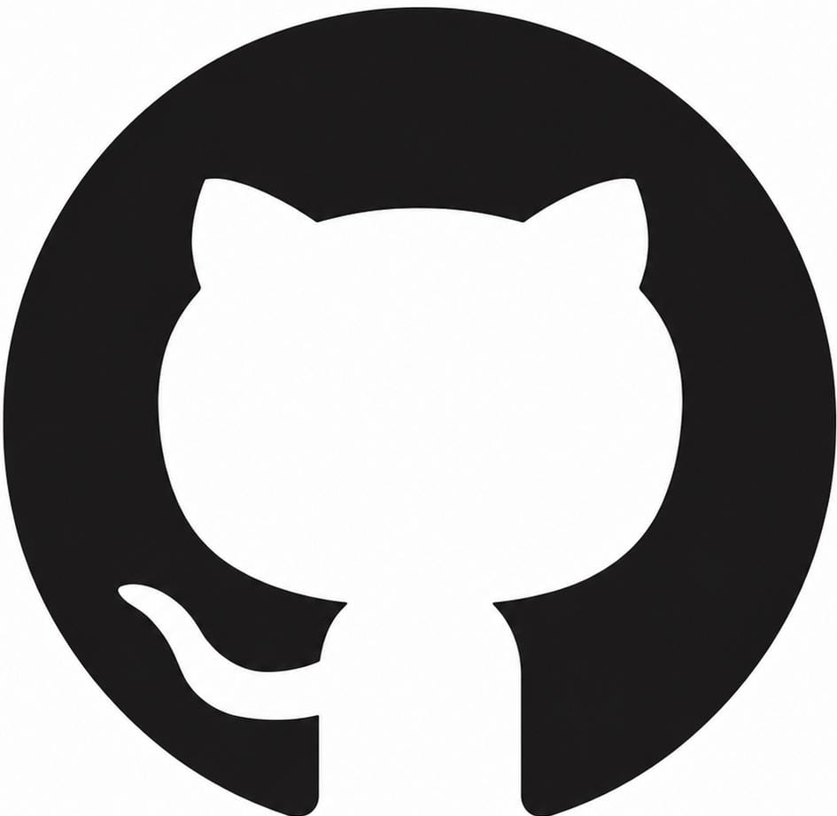

🌐 Mes Réseaux Sociaux
Retrouve-moi sur ces plateformes et connectons-nous !
LinkedIn
Chrystal Orian VIGAN
@chrystal-orian-vigan
Mon profil professionnel : expériences, formations, recommandations et veille tech.
🔗 Visiter
Chrystal Orian VIGAN
@chrystal-git
Mes projets open source, contributions et dépôts de code.
🔗 Voir mes projets
Chrystal Orian VIGAN
@Sam Chryst
Mon réseau social où je suis le plus souvent active pour les messages.
🔗 Discussion📸
Instagram
Chrystal Orian
@chrystal.orian
Ma vie quotidienne, voyages et moments de créativité en photos et stories.
🔗 Voir mon Insta🐦
Twitter / X
Chrystal Orian
@chrystal_orian
Veille tech, pensées du moment et partages autour du développement et de la data.
🔗 Me suivre